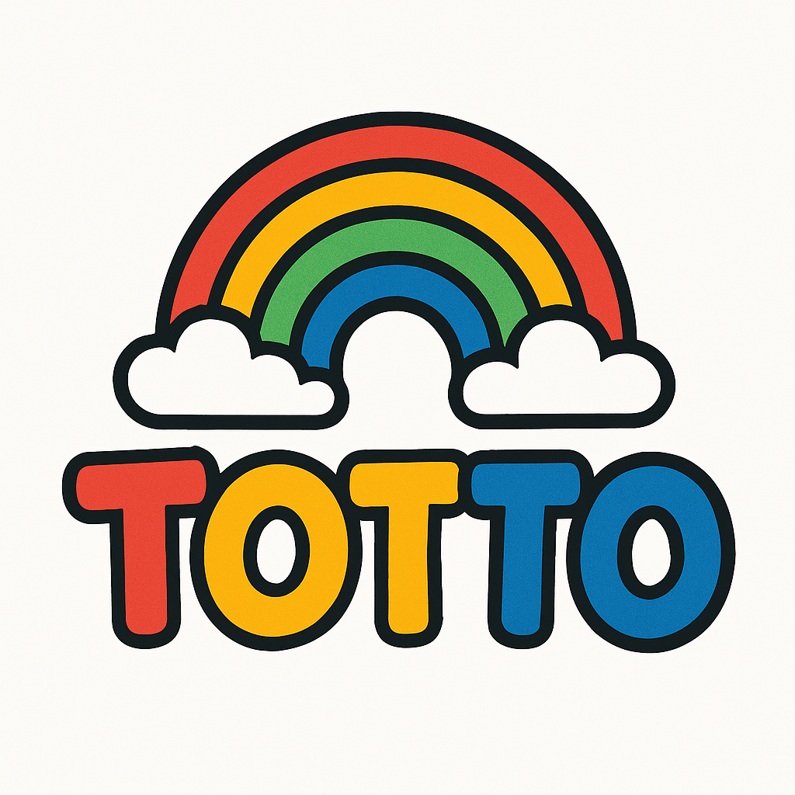

Totto is a fun and interactive frontend-only toy shopping web application designed to simulate a real e-commerce experience. Built using modern technologies like React.js, HTML, and CSS, the platform offers users a smooth and visually appealing interface for browsing and discovering a wide range of toys.
✨ Key Features:
Toy Listing Page: Displays a variety of toys with images, names, prices, and descriptions.
Category Filtering: Users can browse toys by categories such as action figures, dolls, puzzles, and more.
Search Functionality: Quickly find specific toys by typing keywords.
Responsive Design: Looks great on mobile, tablet, and desktop devices.
Add to Favorites: Allows users to mark toys they like (saved in local storage).
Toy Detail Page: Clicking a toy opens a detailed view with an enlarged image and full description.
User-Friendly UI: Colorful, child-friendly interface designed to be fun and easy to use